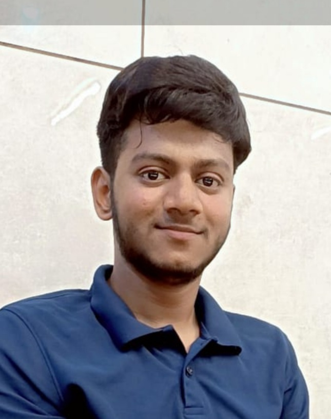

Anushk Kumar Raj
Btech,Computer Science and Engineering
About Me
Hey There!Its Anushk Kumar Raj ,a coder and programmer. I am a 2nd year Computer Science Engineering student having done my 10th and 12th from Kendriya Vidyalaya No1 AFS Chakeri kanpur. My specializations are in languages C,C++ and Python.Passionate in Web Development for building websites solving real life problems using it and making franchises and brands beautiful.Join me in this beautiful journey.
Interests
- Web series
- Singing
- Playing Instruments
Skills
- Html
- Css
- Javascript
- Github
- C++
Education
- 12th graduate
- Btech student
- MLSA Kiet